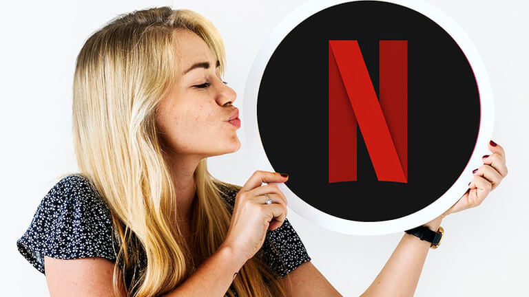

Netflix s'apprête à désabonner les utilisateurs inactifs
Netflix vient d’annoncer vouloir entamer un processus de désabonnement des comptes inactifs, aussi appelés comptes « zombies » pour éviter que certains abonnés ne soient facturés pour rien.
Cependant, il sera facile de récupérer notre profil intact même si celui-ci se fait couper, à condition que l’on en fasse la demande dans les 10 mois suivant la procédure, sans quoi il sera définitivement supprimé.

Il n’y a rien de frustrant comme de payer dans le vide pour un service qu’on n’utilise pas. Même si c’est plutôt rare, il peut s’agir d’un oubli, et quand on finit par s’en apercevoir, on se rend compte qu’on aurait pu mettre cet argent-là dans quelque chose que l’on aime.
C’est peut-être moins courant pour un service comme Netflix, alors qu’il est possible de mettre fin à son abonnement à n’importe quel moment, mais on ne se sait jamais…
Une confiance aveugle en ses abonnés
Dans les jours à venir, Netflix compte envoyer un message à tous ses abonnés qui n’ont pas utilisé la plateforme de diffusion en continu depuis plus d’un an pour s’assurer qu’ils veulent bel et bien continuer à payer pour le service. Si l’on ne répond pas à cet appel, notre compte sera automatiquement désactivé, sans être pour autant définitivement supprimé. Ça démontre à quel point Netflix a confiance à la fidélité de sa clientèle, alors que d’autres compagnies en auraient plutôt profité pour continuer à se faire de l’argent sur le dos de ses adhérents.
En même temps, ils ont raison, puisque ces comptes « zombies » en représentent en fait que 0.5% de tous les membres à travers la planète. Ça concerne quand même quelques centaines de milliers d'utilisateurs, qui seront probablement très contents de pouvoir économiser un peu. Pour ceux que ça concerne, il leur sera possible de se réabonner dans les 10 mois suivants la coupure sans perdre ses favoris, ses profils, ni même ses préférences d'affichage tels qu’ils étaient.